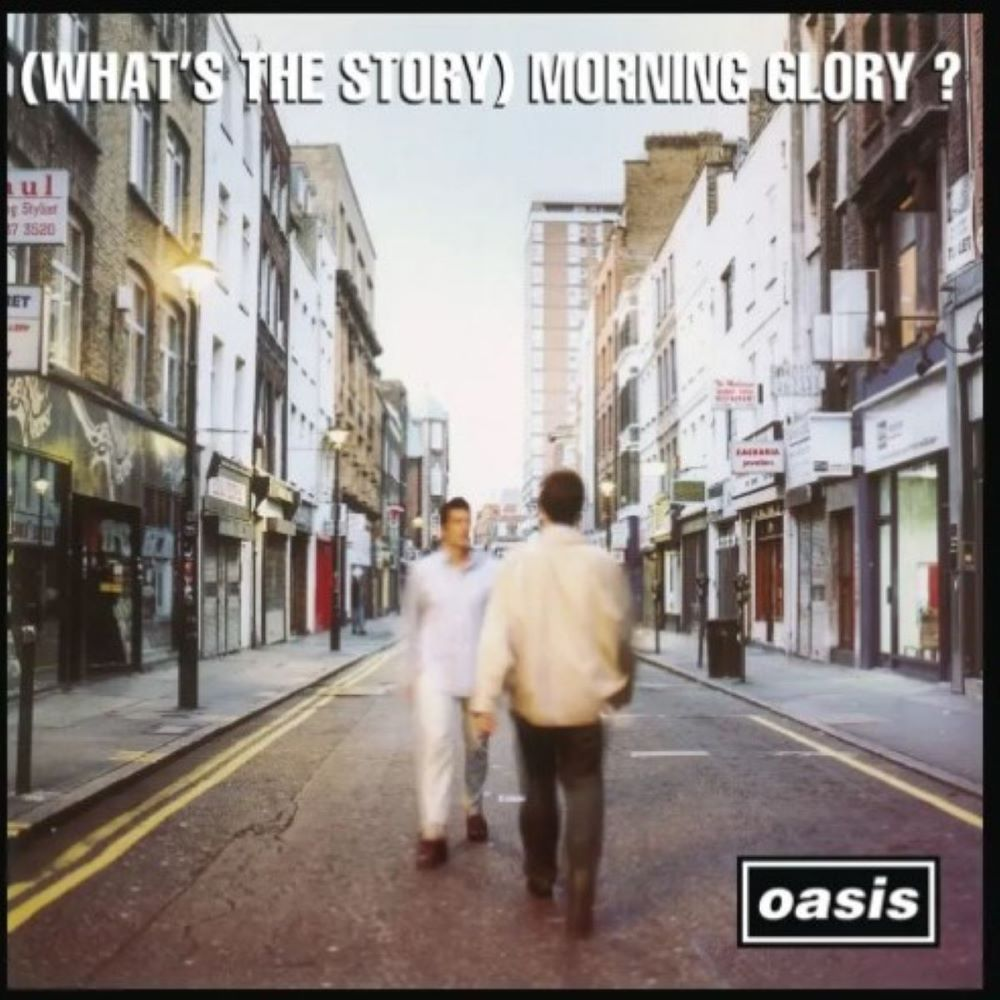

Oasis's second studio album, "(What's the Story) Morning Glory?" released in 1995, is an iconic masterpiece that solidified the band's status as one of the biggest and most influential acts of the 1990s. Building on the success of their debut album, "Morning Glory" propelled Oasis to international superstardom, becoming a cultural phenomenon.
The album opens with the anthemic "Hello," setting a grandiose tone that continues throughout. The lead single, "Roll with It," sparked a memorable chart battle with Blur's "Country House" during the Britpop rivalry, adding an extra layer of drama to the album's release. However, it was the timeless ballad "Wonderwall" that became the defining track, earning widespread acclaim and becoming a global hit.
Other standout tracks include "Don't Look Back in Anger," another Gallagher-penned anthem that resonated with audiences worldwide. The song's poignant lyrics and Noel's melodic sensibilities contributed to its enduring popularity. "Champagne Supernova," the album's epic closing track, showcased the band's ability to create sprawling, atmospheric compositions.
"(What's the Story) Morning Glory?" not only achieved massive commercial success but also received critical acclaim for its production, which blended rock, pop, and psychedelic elements. The album's sound, characterized by Noel Gallagher's distinctive guitar work and Liam Gallagher's emotive vocals, became synonymous with the Britpop era.
The album's cover art, featuring two men in a London street scene, became an iconic image associated with the '90s music scene. The entire package, from the music to the visuals, contributed to the album's cultural impact and lasting legacy.
Despite the internal tensions within the band during the recording process, "(What's the Story) Morning Glory?" remains one of the best-selling albums in the UK and has left an indelible mark on the history of rock music. Its influence continues to be felt, and the album's songs remain staples of classic rock radio, maintaining their relevance across generations.

Oasis 2rd Album (What's the Story) Morning Glory
 ?
?